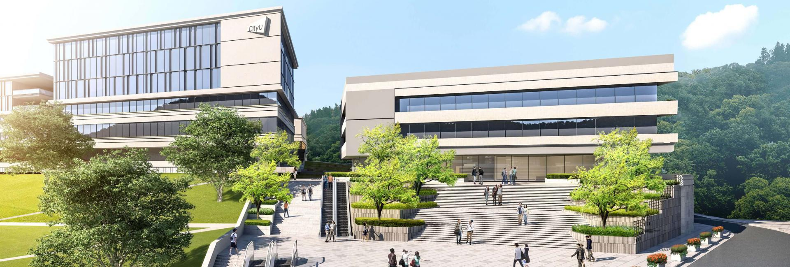

Research, made accessible.
Publications and working papers will be listed here after verification. No research outputs have been added to this website yet.
Awaiting the first publication listCITYUHK · DONGGUAN
Exploring the intersection of artificial intelligence and business — and the possibilities it opens for people, organizations, and society.

01 / ABOUT THE LAB
What becomes possible when business meets artificial intelligence?
Business Artificial Inteligence Lab is based at City University of Hong Kong (Dongguan). This first website concept frames a space for exploring how AI can inform business decisions, reshape organizations, and create value for people.
The research themes below are proposed starting points. The lab’s mission and programme will be finalized with the team.
Connect with the labStart with questions that matter.
Build understanding through evidence.
Keep people at the heart of progress.
02 / RESEARCH EXPLORATIONS
New perspectives on intelligent business.
Proposed themes for the lab’s research agenda.
03 / PEOPLE & PERSPECTIVES
A space for the people behind the questions — across business, technology, and the social sciences.
Start a conversationFaculty, researchers, and student profiles will appear here once the team information is confirmed.
04 / KNOWLEDGE & EXCHANGE
Publications and working papers will be listed here after verification. No research outputs have been added to this website yet.
Awaiting the first publication listThis space is reserved for confirmed seminars, workshops, and lab updates. Event details will be shared when available.
No events announced on this site yetOUR LOCATION
Located in Songshan Lake Science City, CityUHK (Dongguan) sits in the Guangdong–Hong Kong–Macao Greater Bay Area — a setting that brings education, research, and industry into close proximity.
Discover the university05 / LET’S CONNECT
Research collaboration. Academic exchange. A shared question.
This is where future connections begin.
City University of Hong Kong (Dongguan)
8 Gaoxiong Road, Songshan Lake